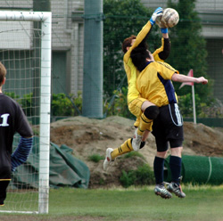
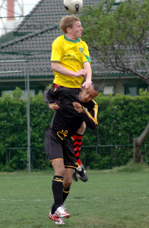

|
YC&AC Sunday 20th April,
Looking at the table before the game you would have expected a one sided game, the Panthers side that is. Our newest recuits, Kei, Jon and a rejuvenated Tom joined us and we were assured a great game and a win at the end. Sadly all did not go to plan and after the first 30 seconds the defense knew what was in store for us!
Shane attacked in force on the left, through the middle and on the right. Their probing attacks dragged the mid-fielders around and left the defense panting on more than one occasion. Saying that the Panthers defended well with some well cleared balls from inside the 18yrd box as well as disrupting their attacks on the wings.
The break through for Shane came after a few attempts from corners and some cracking one time attempts. To be fair it was a well deserved goal after some excellent attacking play.
Panther’s heads didn’t go down and we pushed on to go for the win even though we were down. With Shane still nipping at the heels of the defenders we went into half time. A rousing half time talk by Nick, captain of the panthers, left the team ready to push and win the second half. His eternal wisdom and advice, which included don’t kick the ball to far forward, led us to win a free kick a few yards out of the box. Our newest recruit in his first game for the team walked up to take the kick. Movement in the box distracted the keeper while Kei played the ball into the upper left hand side of the goal, the keeper didn’t stand a chance and David Beckham couldn’t have done any better!!
We were back in with a chance and we played hard to keep the ball, some nice passing down the wing from a free kick led to another opportunity, Shane shut us out well and we couldn’t get a good strike on goal. Shane kept coming and with a more attacking formation from the Panthers of 3-4-3, (Nick what were you thinking?) we had difficulty controlling the area in front of the defenders, a well placed throw in from Shane FC and a quick turn and shot from their striker put them back in the lead. Looking a bit knackered Panthers continued to defend valiantly but we struggled to get the ball into an attacking flow, the game ended at 2-1 to Shane FC and remarkably with no yellow cards, maybe a first in TML history!
Report by Lee Rawlinson
|